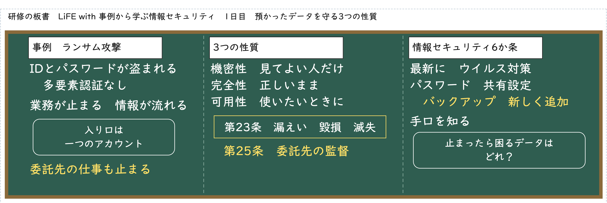
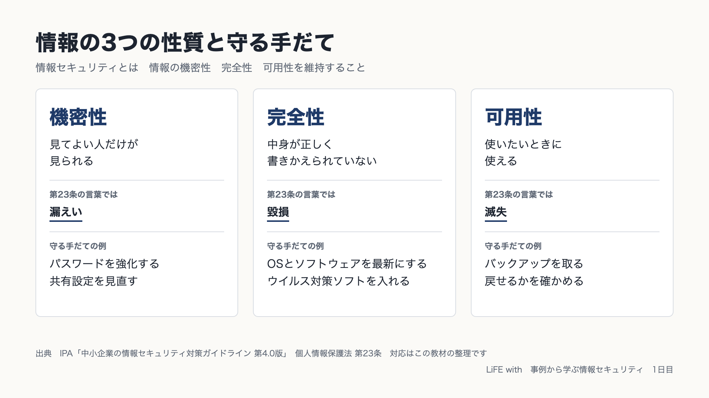

1 今日の問い
まず、自分で考えてみてください。答えが出なくても大丈夫です。先に考えておくと、あとの話が頭に残りやすくなります。
2 ラジオを聞く
文字をタップすると、その場所から聞けます。
動画で見る
板書

図解

3 あなたならどうするか
4 条文を確かめる
［ ］に入る言葉を選んでください。試験は条文の言葉で問われます。
5 自分の教室で考える
子どもや学校の名前、特定できる出来事は書かないでください。ここに書いたことは、この端末の中にだけ保存されます。どこにも送りません。
6 答え合わせ
最初の問いに、もう一度答えます。思い出すことで、記憶に残ります。
復習の日
終わったら押してください。3日後・7日後・21日後に、同じ問いがもう一度出てきます（間隔をあけた反復）。
試験の過去問
独立行政法人 情報処理推進機構（IPA）が公表している情報セキュリティマネジメント試験の問題です。問題の文言は変えていません。この教材のほかの部分は LiFE with が独自に作ったもので、IPAとは関係ありません。法改正や技術の変化により、今は問題として成り立たないものがあります。
専門家と国が発信している情報
試験
- 情報セキュリティマネジメント試験（独立行政法人 情報処理推進機構（IPA））
- 過去問題（独立行政法人 情報処理推進機構（IPA））
- 試験要綱・シラバス（独立行政法人 情報処理推進機構（IPA））
国と公的機関の手引き
- 情報セキュリティ10大脅威 2026（独立行政法人 情報処理推進機構（IPA））
- 中小企業の情報セキュリティ対策ガイドライン（独立行政法人 情報処理推進機構（IPA））
- 国民のためのサイバーセキュリティサイト（総務省）
- インターネットの安全・安心ハンドブック（国家サイバー統括室）
- 個人情報保護法ガイドライン（通則編）（個人情報保護委員会）
法令（e-Gov法令検索）
- 個人情報の保護に関する法律（デジタル庁 e-Gov法令検索）
出典
条文は e-Gov法令検索から取得したものです。事例は、国や公的機関が公開した資料の要約です。この教材は、小さな事務所の情報セキュリティを任された人が学んだことを記録するために、生成AI（Claude）を使って作り、出典と照らし合わせて確かめています。法律の判断が必要なときは、専門家に相談してください。
© LiFE with 絵：野々宮すみれ（LiFE withの素材スタジオ）